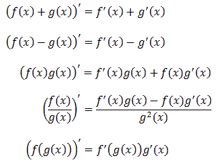

Reguły obliczania pochodnych
Jeżeli obie funkcje f(x) i
g(x) są różniczkowalne (tzn. możemy policzyć ich pochodne), to zachodzą następujące wzory:
 Dokładniejsze omówienie każdego z tych wzorów (wraz z
przykładami) znajduje się w kolejnych podrozdziałach.